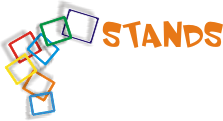
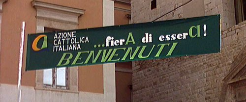
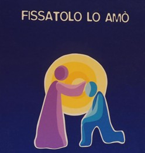
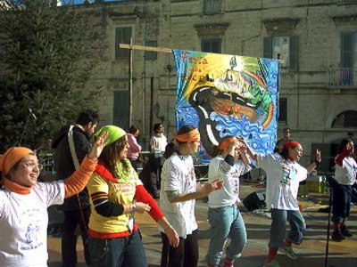

con
il patrocinio del Comune di Bisceglie

Referenti della Commissione Stands
(Zucaro Mimmo e Benito Leo)
La commissione previa visita al luogo della fiera, predisporrà una mappa logistica dei lotti esposizione per gli stand e assegnare attraverso un modulo di partecipazione il lotto esposizione agli espositori.

Stands
Stands delle varie associazioni parrocchiali comprensivi di specialità gastronomiche cittadine:
Trani: 3
Corato: 2
Bisceglie: 3
Barletta: 3
Forania: 3
TENDA DELLO SPIRITO

Sarà allestita presso la chiesa di San Luigi
E sarà così strutturata:
• Uno spazio per la celebrazione del sacramento della riconciliazione con alcuni sacerdoti
• La Croce di San Damiano con dei Mattoni (richiamo alla casa segno della giornata)
• Un braciere con incenso
• Pensieri spirituali

con
il patrocinio del Comune di Bisceglie